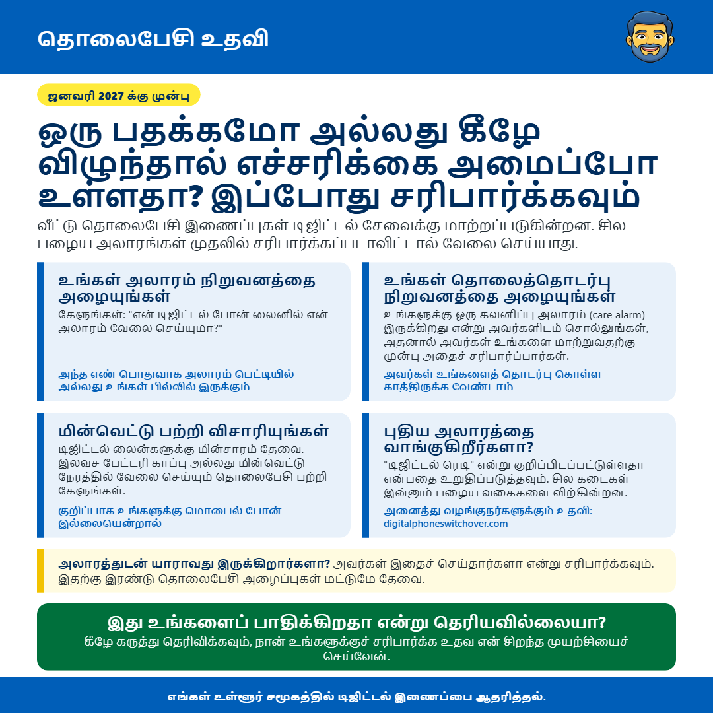

ஒரு பதக்கமோ அல்லது கீழே விழுந்தால் எச்சரிக்கை அமைப்போ உள்ளதா? இப்போது சரிபார்க்கவும்
James Gartshore எழுதியது · · அன்றாடத் தொழில்நுட்பம்சுருக்கமாக
- നിങ്ങളുടെ അലാറ കമ്പനിയെ വിളിക്കുക: 'ഡിജിറ്റൽ ഫോൺ ലൈനിൽ എന്റെ അലാറ പ്രവർത്തിക്കുമോ?' എന്ന് ചോദിക്കുക (നമ്പർ സാധാരണയായി അലാറ ബോക്സിലോ നിങ്ങളുടെ ബില്ലിലോ ആയിരിക്കും)
- നിങ്ങളുടെ ഫോൺ കമ്പനിയെ വിളിക്കുക: നിങ്ങൾ ഒരു കെയർ അലാറയുണ്ടെന്ന് അവരോട് പറയുക, അതിനാൽ അവർ നിങ്ങളെ മാറ്റുന്നതിന് മുമ്പ് അത് പരിശോധിക്കും (അവർ നിങ്ങളെ ബന്ധപ്പെടാൻ കാത്തിരിക്കരുത്)
- വൈദ്യുതി തടസ്സങ്ങളെക്കുറിച്ച് ചോദിക്കുക: ഡിജിറ്റൽ ലൈനുകൾക്ക് വൈദ്യുതി ആവശ്യമാണ്. സൗജന്യ ബാറ്ററി ബാക്കപ്പ് അല്ലെങ്കിൽ വൈദ്യുതി തടസ്സപ്പെടുമ്പോൾ പ്രവർത്തിക്കുന്ന ഫോൺ എന്നിവ ചോദിക്കുക (പ്രത്യേകിച്ച് നിങ്ങൾക്ക് മൊബൈൽ ഫോൺ ഇല്ലെങ്കിൽ)
- പുതിയ അലാറ വാങ്ങുക?: അത് 'ഡിജിറ്റൽ റെഡി' എന്ന് പറയുന്നുണ്ടെന്ന് ഉറപ്പാക്കുക. ചില കടകളിൽ പഴയ തരം ഉപകരണങ്ങൾ ഇപ്പോഴും വിൽക്കുന്നു (എല്ലാ പ്രൊവൈഡർക്കും സഹായം: digitalphoneswitchover.com)}

அனைவருக்கும் வணக்கம், உங்கள் வீட்டில் உள்ள தொலைபேசி இணைப்பைப் பயன்படுத்தி பெண்டன் அல்லது கீழே விழுந்தால் எச்சரிக்கை போன்ற தனிப்பட்ட அலாரத்தைப் (personal alarm) பயன்படுத்துபவர்களுக்கு இது ஒரு முக்கியமான தகவலைப் பகிர்ந்து கொள்ள விரும்புகிறேன்.
ஐக்கிய இராச்சியத்தில் உள்ள வீட்டு தொலைபேசி இணைப்புகள் பழைய தாமிர வலையமைப்பிலிருந்து புதிய டிஜிட்டல் சேவைகளுக்கு மாற்றப்பட்டு வருகின்றன, மேலும் இந்த மாற்றம் ஜனவரி 2027 இறுதிக்குள் முடிவடையும் என்று எதிர்பார்க்கப்படுகிறது. பெரும்பாலானவர்களுக்கு இது பெரிய மாற்றமில்லை: நீங்கள் உங்கள் தொலைபேசியை சுவரில் உள்ள सॉकेटக்கு பதிலாக உங்கள் ரூட்டருடன் (router) இணைத்து இயல்பாகப் பயன்படுத்தலாம். ஆனால் சில பழைய பராமரிப்பு அலாரங்கள் பழைய இணைப்புகளுக்காக உருவாக்கப்பட்டவை, அவை முதலில் சரிபார்க்கப்படாவிட்டால் வேலை செய்யாமல் போகலாம்.
உங்களுக்கு அல்லது உங்களுக்குத் தெரிந்த ஒருவருக்கு இது போன்ற அலாரம் இருந்தால், நீங்கள் செய்ய வேண்டிய இரண்டு எளிய தொலைபேசி அழைப்புகள் உள்ளன. முதலாவதாக, உங்கள் அலாரத்தை வழங்கிய அல்லது கண்காணிக்கும் நிறுவனத்திற்கு அழைத்து, அது டிஜிட்டல் தொலைபேசி இணைப்பில் வேலை செய்யுமா என்று கேளுங்கள். அவர்களின் எண் பொதுவாக அலாரம் அலகில் அல்லது உங்கள் பில்லில் இருக்கும். இரண்டாவதாக, உங்கள் தொலைபேசி நிறுவனத்திற்கு அழைத்து, உங்களுக்கு ஒரு பராமரிப்பு அலாரம் இருப்பதாக அவர்களிடம் சொல்லுங்கள். அவர்கள் உங்களை மாற்றுவதற்கு முன்பு அதைச் சரிபார்க்க வேண்டும், மேலும் சிலர் ஒரு பொறியாளரை அனுப்பக்கூடும். அவர்கள் உங்களைத் தொடர்பு கொள்ள காத்திருப்பதை விட இது சிறந்தது.
மின்சாரம் துண்டிக்கப்படுவதைப் (power cuts) பற்றி கேட்பதும் முக்கியம். புதிய டிஜிட்டல் இணைப்புகள் வேலை செய்ய மின்சாரம் தேவை, எனவே மின்சாரம் துண்டிக்கப்பட்டால் உங்கள் வீட்டு தொலைபேசியும் துண்டிக்கப்படலாம். தங்கள் நில இணைப்பு (landline) நம்பியிருக்கும் மக்களுக்கு பல வழங்குநர்கள் இலவச பேட்டரி காப்புப் பிரதி (battery backup) அல்லது மின்சாரம் துண்டிக்கப்பட்டால் மொபைல் நெட்வொர்க்கிற்கு மாறும் தொலைபேசியை வழங்குகிறார்கள்.
நீங்கள் ஒரு புதிய அலாரத்தை வாங்கினால், அது டிஜிட்டல் தயார் என்று குறிப்பிடப்பட்டுள்ளதா என்று சரிபார்க்கவும், ஏனெனில் சில இடங்களில் பழைய வகைகளை இன்னும் விற்கிறார்கள். அனைத்து தொலைபேசி நிறுவனங்களுக்கும் digitalphoneswitchover.com இல் மேலும் தகவல்கள் உள்ளன.
உங்களுக்குப் பெரியவர்கள், உறவினர்கள் அல்லது நண்பர்கள் அலாரத்துடன் இருந்தால், அவர்கள் இதைப் பற்றித் தெரிந்து வைத்திருக்கிறார்களா என்று சரிபார்க்கவும். இது உங்களுக்குப் பொருந்துமா என்று உங்களுக்குத் தெரியாவிட்டால், बस எனக்கு ஒரு செய்தியை அனுப்புங்கள் மற்றும் நான் உதவ என் சிறந்த முயற்சியைச் செய்வேன்.
இது உங்களுக்கு உதவியாக இருக்கும் என்று நம்புகிறேன், மேலும் இதை பயனுள்ளதாக இருக்கும் என்று நினைப்பவர்களுக்குப் பகிரத் தயங்காதீர்கள்.